W nowszych, późniejszych nieco pokładach skał pojawiają się ryby, po nich dziwaczne potwory,
niby ryby, niby jaszczury, nazwane przez uczonych badaczy rybojaszczurami.
Należały one do najpotworniejszych stworzeń, jakie kiedykolwiek pojawiły się na ziemi.

Miały postać olbrzymiej ryby z rybią kością na grzbiecie, paszczę podobną do paszczy delfina,
uzbrojoną w ostre zęby krokodyla, łeb zaś jaszczurki.
Potężny ogon umożliwiał szybkie ruchy w wodzie, uganianie po morzach za zdobyczą, chwytaną olbrzymiemi szczękami.

Skóra ich była gładką, niepokrytą łuskami. Nozdrza umieszczone w pobliżu wielkich ócz służyły im,
podobnie jak dziś wielorybom, do wciągania powietrza.